Chapter 09. 가상메모리
- 시스템의 프로세스들은 CPU와 메인 메모리를 다른 프로세스들과 공유한다.
- 메모리를 보다 효율적이고 더 적은 에러를 갖도록 관리하기 위해서 현대의 시스템은 가상메모리 virtual memory VM 이라고 알려진 메인 메모리의 추상화를 제공한다.
- 가상메모리는 각 프로세스에 하나의 크고 통합된, 사적 주소공간을 제공한다.
- 가상 메모리의 중요한 세가지 기능
- 메인 메모리를 디스크에 저장된 주소공간에 대한 캐시로 취급해서 메인 메모리 내 활성화 영역만 유지하고, 데이터를 디스크와 메모리 간에 필요에 따라 전송하는 방법으로 메인 메모리를 효율적을 ㅗ사용
- 각 프로세스에 주소공간을 제공함으로써 메모리 관리를 단순화한다.
- 각 프로세스의 주소공간을 다른 프로세스에 의한 손상으로부터 보호한다.
가상 메모리를 이해하면 어떻게 시스템이 일반적으로 동작하는지 더 잘 이해할 수 있으며, 가상메모리의 강력한 성능을 응용프로그램에 적용할 수 있다. 또한 가상메모리는 치명적인 에러를 발생시키는데 이를 방지할 수 있다.
9.1 물리 및 가상주소 방식
- 컴퓨터 시스템의 메인 메모리는 M개의 연속적인 바이트 크기 셀의 배열로 구성된다.
- 각 바이트는 고유의 물리 주소(PA physical address)를 가진다.
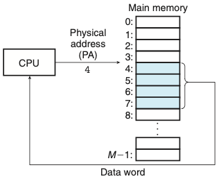
- 위의 그림은 물리 주소 방식이다.
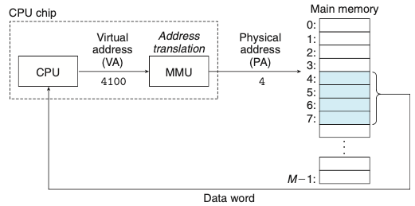
- 위의 그림은 가상주소방식이다.
- CPU는 가상주소지정으로 가상주소(VA virtual address)를 생성해서 메인 메모리에 접근하다.
- 가상주소를 물리 주소로 변환 하는 작업은 주소 번역이다.
- CPU 칩 내에 메모리 관리 유닛(MMU)를 사용해서 가상주소로 번역한다.
9.2 주소공간
- 메인 메모리의 각 바이트는 가상 주소공간으로부터 선택된 가상주소를 가진다.
9.3 캐싱 도구로서의 VM
- 가상메모리는 디스크에 저장된 N개의 바이트 크기의 셀 배열로 구성된다.
- VM system은 가상메모리를 규정된 사이즈 블록 단위로 분할하여 관리한다.
- 분할된 블록들은 가상페이지라고 부른다.
- 가상페이지의 집합은 세 개의 중첩되지 않는 부분집합으로 나누어진다.
- Unallocated: VM 시스템에 의해 아직까지 할당되지 않은 페이지들
- Cached: 현재 물리 메모리에 캐시되어 할당된 페이지들
- Uncached: 물리 메모리에 캐시되지 않은 할당된 페이지들
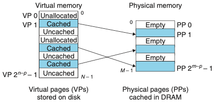
- 위의 그림은 여덟 개의 가상페이지를 갖는 작은 가상메모리를 보여준다.
9.3.1 DRAM 캐시의 구성
- DRAM 캐시의 미스 비용과 첫 번째 바이트를 접근하는 데 드는 비용은 크기 때문에 가상페이지 또한 커지고 있다.
- DRAM 캐시는 완전 결합성이기 때문에 모든 가상페이지는 물리페이지에 둘 수 있다.
- 디스크의 큰 접근 시간 때문에 DRAM은 항상 write-through 대신에 write-back을 사용하고 있다.
완전 결합성은 하나의 집합에 모든 라인이 들어있는 캐시 구조를 말한다.
9.3.2 페이지 테이블
- 모든 캐시에서처럼 VM 시스템은 가상페이지가 DRAM 어딘가에 캐시되었는지 결정하기 위한 방법을 갖고 있어야 한다.
- 이러한 기능은 운영체제 소프트웨어와 MMU 내의 주소 번역 하드웨어와 페이지 테이블의 조합으로 제공된다.
- 페이지 테이블: 가상페이지를 물리페이지로 매핑하는 역할
- 주소 번역 하드웨어: 가상주소를 물리 주소로 변환할 때마다 페이지 테이블을 읽는다.
- 운영체제: 페이지 테이블의 콘텐츠 관리와 페이지들을 디스크와 DRAM 사이에서 왔다 갔다 하는 것을 관장한다.
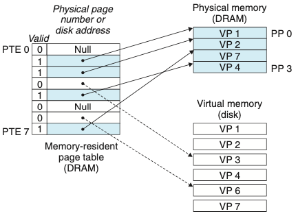
-
위의 그림은 페이지 테이블의 기분 구조를 보여준다.
-
DRAM 캐시가 완전 결합성이므로 물리페이지가 모든 가상페이지를 포함할 수 있다.
9.3.3 페이지 적중
- PTE 내의 물리 메모리 주소를 사용해서 해당 워드의 물리 주소를 구성한다.을 관장한다.
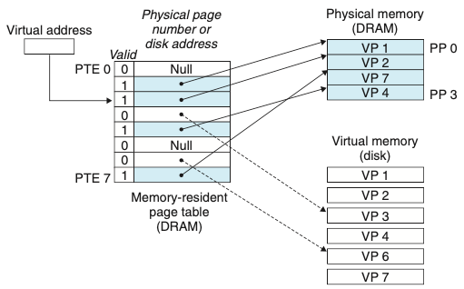
9.3.4 페이지 오류
- 가상메모리 용어에서 DRAM 캐시 미스는 페이지 오류page fault라고 알려져 있다.
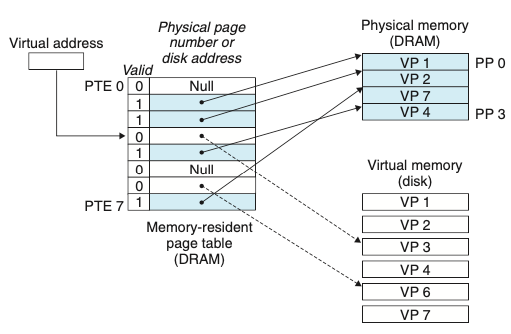
- VP3 내의 워드에 대한 참조는 미스가 되고 페이지 오류를 발생시킨다.
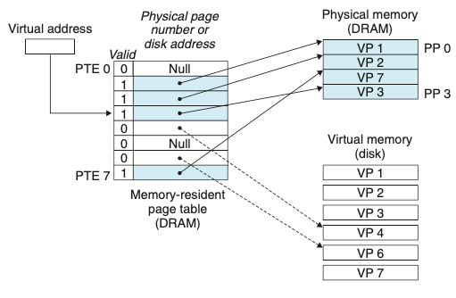
-
페이지 오류 핸들러는 VP4를 희생시키고 디스크로부터 VP3의 사본으로 교체한 뒤 정상적으로 읽는다.
- 페이지: 가상메모리 용어에서의 블록
- 스와핑(페이징): 디스크와 메모리 사이에 페이지를 전송하는 동작
- 요구 페이징 demand paging: 미스가 발생할 때, 하나의 페이지로 스와핑되어 들어오는 마지막 순간까지 기다리는 전략
9.3.5 페이지의 할당
- 운영체제가 가상메모리의 새로운 페이지를 할당할 때 디스크 상에 공간을 만들고 임의의 PTE를 디스크에 새롭게 만든 페이지를 가리키도록 할당한다.
9.3.6 문제해결을 위한 또 한 번의 지역성의 등장
- 가상메모리의 개념을 공부하면 비효율적인 것을 느낄 수 있다 하지만 실제로 가상메모리는 잘 동작하는데, 주로 지역성 문제 때문이다.
- 지역성의 원리는 시간상의 어느 시점에서라도 이들이 동작 집합working set 또는 거주 집합resident set이라고 알려진 보다 작은 활성화된 페이지 집합에서 동작하는 경향을 보일 것이라는 점을 약속해준다.
- 쓰레싱thrashing: 동작 집합 크기가 물리 메모리보다 더 크면, 페이지들이 연속적으로 스왑을 반복하게 되는 불행한 상황
9.4 메모리 관리를 위한 도구로서의 VM
- 다수의 가상페이지들이 동일한 공유된 물리페이지에 매핑될 수 있다.
- 요구 페이징과 분리된 가상 주소공간의 조합은 메모리가 시스템에서 사용되고 관리되는 방식에 중요한 영향을 미친다.
- 특히 VM은 링킹과정과 로딩, 코드와 데이터의 공유, application으로의 메모리 할당을 단순화 해준다.
- 링킹을 단순화한다: 별도의 주소공간은 각 프로세스들이 각 메모리 이미지에 대해서 코드와 데이터가 실제로 물리 메모리 내 어디에 위치하는지에 상관 없이 동일한 기본 포맷을 사용하도록 해준다. 이러한 통일성은 링커의 설계와 구현을 매우 단순화해준다.
- 로딩을 단순화한다: 가상메모리는 실행파일과 공유 목적파일들을 메모리에 로드하기 쉽게 해준다.
- 공유를 단순화한다: 운영체제는 다수의 프로세스가 서로 다른 프로세스에 들어 있는 가상페이지들을 동일한 물리페이지들로 적절하게 매핑해서 한 개의 사본을 공유하도록 할 수 있다.
- 메모리 할당을 단순화한다: 운영체제는 적당한 수의 연속적인 가상메모리 페이지를 할당하고 이들을 물리 메모리 내에 위치한 k개의 임의의 물리페이지로 매핑한다.
9.5 메모리 보호를 위한 도구로서의 VM
- 컴퓨터 시스템은 운영체제가 메모리 시스템에 접근하는 것을 제어할 수 있는 수단을 제공한다.
- 별도의 가상 주소공간을 제공하면 사적 메모리를 다른 프로세스로부터 분리하는 것이 쉬워진다.
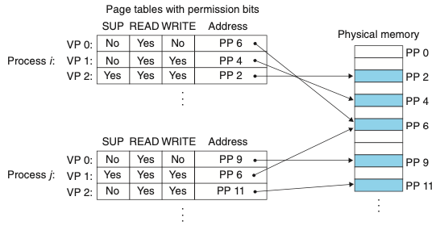
- 위 그림에서 SUP는 커널 모드(수퍼바이저)로 돌고 있는지를 나타내는 비트다.
- 만약 사용자모드에서 VP2에 접근하려 한다면 CPU는 일반 보호 오류를 발생해서 SIGSEGV 시그널을 위반한 프로세스로 보내 커널 내의 예외 핸들러로 제어를 이동시킨다.
- 위와 같은 예외를 “세그먼트 오류segmentation fault”라고 보고한다.
9.6 주소의 번역
용어설명
- VA: virtual address
- PETA: page table entry address
- PTE: page table entry
- PA: physical address
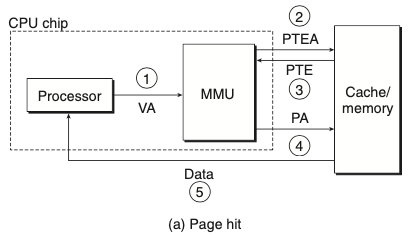
- 페이지 적중이 일어났을 때
- 프로세서는 가상주소를 생성하고 이것을 MMU로 보낸다.
- MMU는 PTE 주소를 생성하고 이것을 캐시/메인 메모리에 요청한다.
- 캐시/메인 메모리는 PTE를 MMU로 리턴한다.
- MMU는 물리 주소를 구성하고 이것을 캐시/메인 메모리로 보낸다.
- 캐시/메인 메모리는 요청한 데이터 워드를 프로세서로 보낸다.
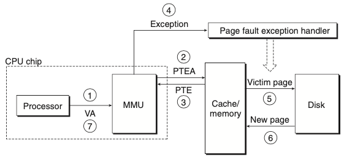
- 페이지 오류를 처리할 때
- 페이지 적중과 동일
- 페이지 적중과 동일
- 페이지 적중과 동일
- PTE의 유효비트는 0이므로 MMU는 예외를 발생시키고, CPU 내의 제어를 운영체제 커널의 페이지 오류 예외 핸들러로 이동시킨다.
- 오류 핸들러는 물리 메모리 내의 희생자 페이지를 결정하고, 만일 이 페이지가 수정되었다면 디스크로 페이지를 이동한다.
- 오류 핸들러는 새 페이지를 페이지 이동해서 들여오고, 메모리 내의 PTE를 갱신하다.
- 오류 핸들러는 처음의 프로세스로 돌아가고 오류 인스트럭션은 재시작된다.
9.6.1 캐시와 VM의 통합
- 대부분의 시스템은 SRAM 캐시에 물리 주소지정을 선택한다.
- 물리 주소를 사용하면 다중 프로세스들이 캐시에서 블록을 갖는 것과 마찬가지로 가상페이지로부터 블록을 공유하는 것이 단순해진다.
- 물리 주소를 사용하는 캐시가 가상메모리와 통합될 수 있는 이유는 주소 번역이 캐시 참조 이전에 일어나기 때문이다.
- TLB를 사용하면 캐시 참조 이전에 주소 번역이 일어남
9.6.2 TLB를 사용한 주소 번역 속도의 개선
- 주소 번역의 비용을 줄이기 위해 MMU 내에 번역 참조 버퍼translation lookaside buffer(TLB)라고 부르는 작은 캐시를 포함한다.
- TLB는 작은 가상주소지정 캐시로, 각 라인은 하나의 PTE로 구성된 하나의 블록을 저장한다.
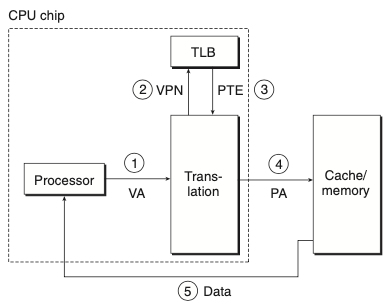
- TLB 적중이 발생할 때
- CPU는 가상주소를 생성한다.
- MMU는 적당한 PTE를 TLB로부터 선입한다.
- MMU는 적당한 PTE를 TLB로부터 선입한다.
- MMU는 가상주소를 물리 주소로 번역하고, 그것을 캐시/메인 메모리로 전송한다.
- 캐시/메인 메모리는 요청한 데이터 워드를 CPU로 리턴한다.
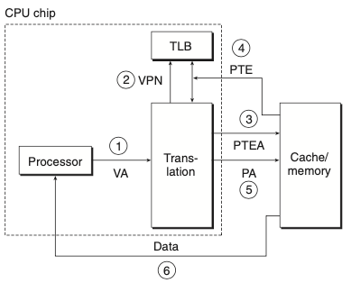
- TLB 미스가 발생하면, MMU는 PTE를 L1캐시에서 선입해야한다.
9.6.3 다중 레벨 페이지 테이블
- 주소를 번역하기 위해서 한 개의 페이지 테이블을 사용하면 낭비가 매우 심하기 때문에 페이지 테이블의 계층구조를 사용한다.

- 위의 그림은 2단계 페이지 테이블 계층구조이다.
- 위와 같은 기법은 메모리 요구량을 두 가지 방법으로 줄여준다.
- 만일 1단계 PTE가 널이면, 해당 2단계 페이지 테이블이 존재할 필요가 없어진다. -> 절약
- 1단계 테이블만이 항상 메인 메모리에 있고 2단계 페이지 테이블은 필요로 할 때마다 페이지 인 또는 아웃이 되므로 메인 메모리로의 압박을 줄일 수 있다.

- 위의 그림은 K단계 페이지 테이블을 사용한 주소 번역이다.